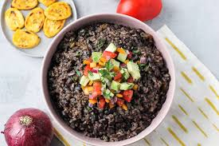

Black Beans and Rice!!

This is a dish I have had since I was 2 years old!! It is my go to meal prep dish. It consists of cilantro lime
rice and black beans and then a protein of your choice (I recommend chicken!)!
Ingredients
- 1 cup of uncooked rice
- 2 cans of black beans
- 1/2 of chicken
- 4oz of cheese
- cilantro
- taco seasoning
- tumeric
- Sour cream
- Hot sauce
- Lime juice
Steps
- Start cooking one cup of rice, use a splash of lime juice while you are cooking your rice
- Prep cook your chicken
- Start cooking 2 cans of black beans
- Add your tumeric, cilantro, and taco seasoning to the black beans
- Once your chicken is done cooking add to your black beans
- Finally once everything is warm and cooked together combine into a bowl
- Top with cheese, sour cream, hot sauce and enjoy!!
Home